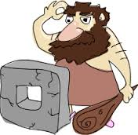
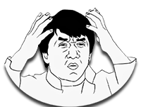
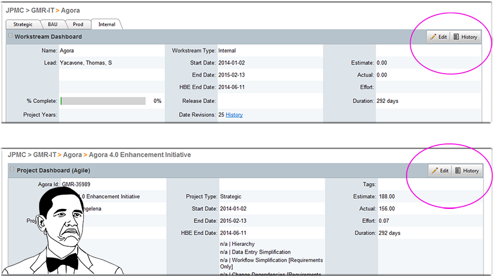
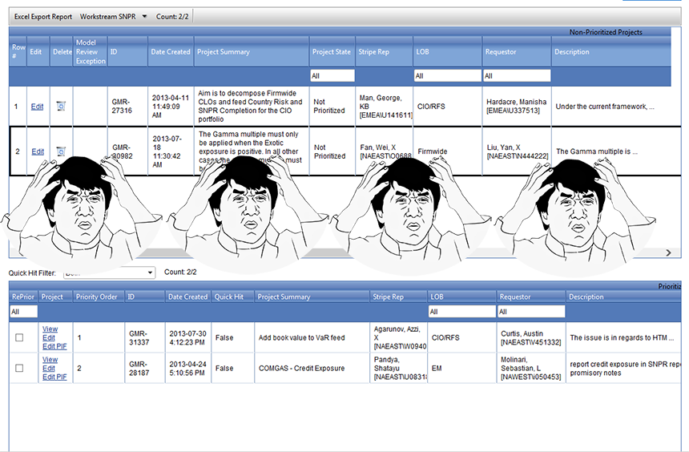
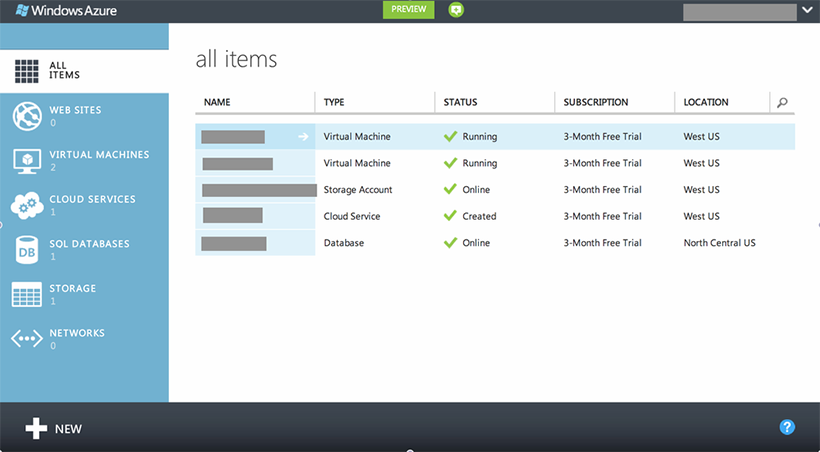

HTML, JS, CSS Frmaework for creating beatiful cross platform presentations
with support for CSS 3D transformations
Degrades gracefully to support almost any browser desktop or mobile
Most of the presenters were using a forein presentation system
What is this thing?
Reveal.js!
What makes it special?
No special software needed
Truely portable and platform agnostic
Easy to share
No Powerpoint
FREE!
Markdown
Not a developer?
don't like HTML
Reveal.js supports Markdown
Markdown is a way to write things in a natural way that gets marked down to HTML.
## Markdown support
For those of you who like that sort of thing.
Instructions and a bit more info available [here](https://github.com/hakimel/reveal.js#markdown).
You can export your presentation as a PDF
Just press add ?print-pdf to the URL
Fragments?
It
does
fragmented
views!
Just add class="fragment" to your element
Pretty Code
function linkify( selector ) {
if( supports3DTransforms ) {
var nodes = document.querySelectorAll( selector );
for( var i = 0, len = nodes.length; i < len; i++ ) {
var node = nodes[i];
if( !node.className ) {
node.className += ' roll';
}
}
}
}
Press b or period on your keyboard to enter the 'paused' mode. This mode is helpful when you want to take distracting slides off the screen
during a presentation.
Zoom Out
Press esc
Slides HTML
<section>
<h2>Pause Mode</h2>
<img src="http://musicandeverything.files.wordpress.com/2013/09/download.jpg" />
<p>
Press b or period on your keyboard to enter the 'paused' mode. This mode is helpful when you want to take distracting slides off the screen
during a presentation.
</p>
</section>
Reflections on Reveal.js
Wonderfully collaborative
As a dev, use all the same tools
There is an API for navigation, Leap motion
Don't like something? It's open source, change anything
Not WYSIWYG -> http://slid.es/
Ivan
WebRTC
By: Ivan Joukov
WebRTC
What is it?
WebRTC is a free, open project that enables web browsers with Real-Time Communications (RTC) capabilities via simple JavaScript APIs. The WebRTC components have been optimized to best serve this purpose.
An easy way to do rich peer to peer communications right in the browser
Data exchange
Real Time Audio
Real Time Video
All just in your browsers (no plugins, apps, extensions..)
(Almost) no server required!
How easy?
I made a real time 'live coding' tool using webRTC in under an hour - with audio chat
What's the catch?
Limited browser support (for now). In particular, no IE or mobile browser support. Android Chrome Beta!
If both peers are behind a symmetrical NAT a connection is impossible.
You miss out on some great features a server can provide.
Cross session chat history
Conference calling with more than 2 users
Sending messages to offline users
How it works
Supporting browsers provide JS APIs for establishing connections (PeerConnection), transferring data between peers, and working with streams (MediaStream)
Get media streams using getUserMedia()
Use ICE, STUN or TURN servers to establish the connection and do handshakes
It's free, it's open source, it's cross platform, it's cool. Go try it!
Questions?
Jon W
Not ready
Bora
Web Usability on a Budget

Usable UI, you say?
Not Usable:

Frustrating, slow, cluttered, too many options, too few options, no clear direction, confusing
Usable:
Pleasing UI, inviting, right balance of options, clear direction, uncluttered, clean.
Scroll down to follow Usability Principles.
Usability Principles
Focus on your users and their goals.
Who is using your software?
Why are they using your software?
What other applications do they normally use?
Usability Principles
Talk like your users.
Identify the core concepts they use.
Integrate their business terms into your application.
Usability Principles
Follow conventions.
Be consistent in your layout and control placements.

Usability Principles
Minimize the cost of failure.
Ask confirmation before a major operation, OR
Provide "undo" mechanism after an important operation.
Usability Principles
Provide "affordance".
"a situation where an object's sensory characteristics intuitively imply its functionality and use."

Usability Principles
Use symbology (icons)
... but be careful and do not use them without tooltips or text!

Usability Principles
Some links:
icomoon.io: Free modifiable icon library
wireframe.cc: Online wireframing tool
dribbble.com/tags/ux: UX related links/ideas
uxdesign.smashingmagazine.com: UX related articles
Emil
Javascript on the Move
Javascript is no longer limited to just Web development platforms.
Johnny-Five!
arduino and node.js can be used to create robots
Paired with jQuery's new Pointer API and a camera, Web apps can extend beyound the browser
https://www.youtube.com/watch?v=2rPWArKq878
The Second Screen
Most households have multiple TVs and other digial devices.
Javascript and Websockets is allowing for easier device connectivity
remote control media center from a phone
playing MMORPG using phone, tablet and computer display
Javascript is changing the world
Javascript is becoming a new interoperability standard.
Nothing new
Javascript not restristed or limited to a platform (Windows, Mac, Linux)
Not just a Web technology
Web is starting to interact with the outside world
So what!
As Web developers we have more options today then yesterday.
Ernesto
Improving Performance with Responsive Images
What is not a responsive image?
Serve one big image and let the browser scale it?
Bigger page size
More power consumption
Larger load times
What is a responsive image?
Serve an appropriate image to each user/device
Screen resolution
Device viewport
Device pixel ratio
Media type
Art direction
The srcset attribute
The srcset attribute is an extension to the img and source elements that provides a concice method for delivering
high-res assets to high-density displays only, while allowing the user to override requests based on a preference
or available bandwidth.
The picture element
The picture element is a markup pattern that allows developers to declare multiple sources for an image.
By using media queries, it gives developers control as to when and if those images are presented to the user.
Implementation status
Blink / Chrome
Picture: ASSIGNED (in work)
srcset: IMPLEMENTED/SHIPPED
WebKit / Safari
Picture: UNCONFIRMED (not implemented)
srcset: IMPLEMENTED
Mozilla Firefox
Picture: ASSIGNED (but not implemented)
srcset: OPEN (but not implemented)
Microsoft Internet Explorer
Picture: NO INFORMATION
srcset: NO INFORMATION
Alternatives
github.com/scottjehl/picturefill: Picturefill
github.com/stowball/rwd.images.js: rwd.images.js
github.com/BBC-News/Imager.js: BBC News Imager
Be responsive!
www.abookapart.com/products/responsive-web-design: Responsive web design book
alistapart.com/article/responsive-web-design: Responsive web design paper
picture.responsiveimages.org: Picture element spec
Why we should use it? What is it's benefit in web development?
Makes MVVM pattern available in JS.
Makes easy UI automated unit testing possible.(By use of Dependency Injection)
Makes web apps more responsive (similar to native apps).
Less interaction to server-side. Can handle most UI user interactions in the browser side.
Features of angularJS:
Templating and Data Binding
Dependency Injection
Url Routing
Templating
you can bind the HTML elements and tags with your model variables and the updates/refresh of UI happens bi-directionally. If model value change UI gets updated and the other way around.
ng-repeat used for loops constructions.
ng-app defines the scope for module defined.
ng-Controller defines what controller should be used.
ng-Click attach a click function defined in controller .
Dependency Injection is the design patter where the objects do not instantiate their dependencies, Instead the framework
passes their dependencies to them.
The same API, but 2.x branch drops support for IE6-8
12% smaller, so optimal for modern/mobile web apps
January 2014: jQuery 1.11 and 2.1
Performance optimzation
Available on npm and Bower (package managers)
jQuery 1.13
With Microsoft no longer supporting Windows XP,
jQuery 1.x drops supports for IE6 and 7
Don't worry, not happening until early 2015
You can continue to use jQuery 1.12
Make sure you include a specific version. No jquery-latest.js!
jQuery UI 1.12
Button, Slider, Flipswitch, Textinput from Mobile merge into UI
All widgets from jQuery Mobile will eventually be merged into jQuery UI
High contrast mode
jQuery UI 1.13
Along with jQuery, jQuery UI drops support for IE6 and 7
Supports the pointer events to unify mouse, touch, and pointer support
Pointer events created by Microsoft will be supported by Firefox and Chrome... but not by Safari!
Rewrite of Globalize to use Unicode CLDR
"The Unicode CLDR provides key building blocks for software to support the world's languages, with the largest and most extensive standard repository of locale data available"
Lester
Taking Javascript Offline
Using the HTML5 Application Cache
So what is it?
An interface to specify resources that the browser should cache and make available to offline users
So why use it?
Improved user experience
Increased speed
Ability to work offline
Pain Points
Popularity
Gotcha!
Once appcached always appcached
Content only updates if the content of the manifest changes

 [Source: HTML5Rocks]
[Source: HTML5Rocks]